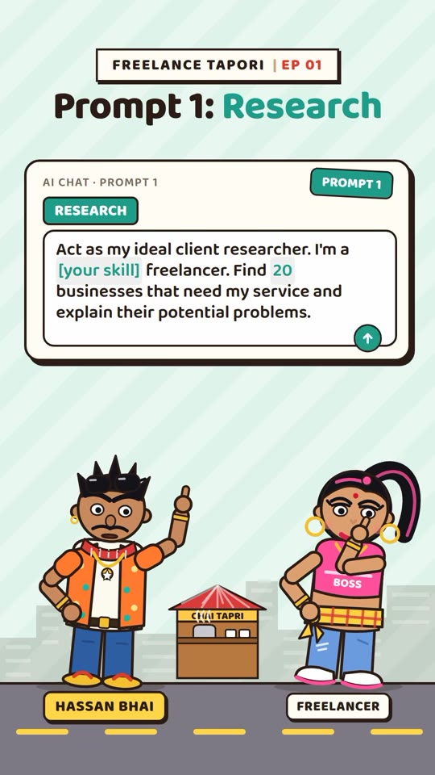
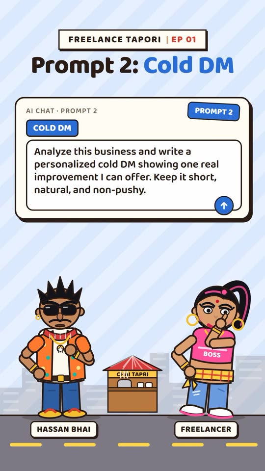
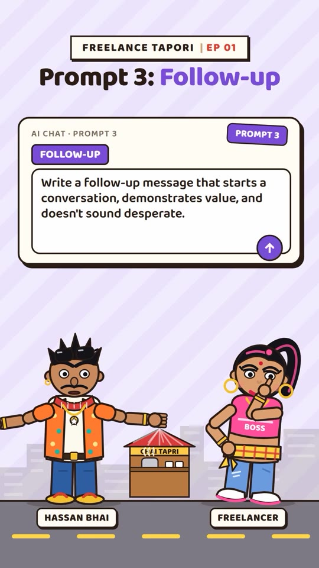
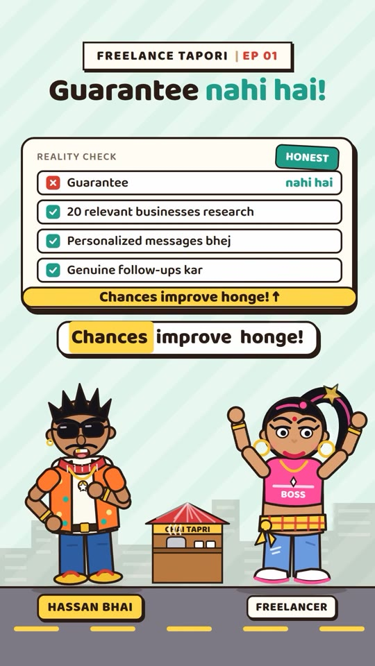

Freelance · Client-Acquisition
The 3-Prompt Freelance Client Engine: Targeted Research, Value-Led Cold DMs & Non-Desperate Follow-Ups
A structured 3-stage LLM prompting architecture designed for early-stage freelancers facing zero clients and empty inboxes. Rather than spraying generic outreach templates across social networks, the workflow uses ChatGPT to: (1) profile 20 niche businesses suffering specific operational or marketing friction, (2) draft concise, observation-backed cold direct messages offering a single concrete improvement, and (3) engineer conversational, high-value follow-ups that avoid sounding needy.

The 3-Step Client Acquisition Engine
- Systematic Business Prospecting (Prompt 1): Never message random business accounts without pre-qualification. Feed ChatGPT your primary skill set (e.g. video editor, Webflow developer, copywriter, Meta ads buyer) and prompt it to return 20 specific company types or regional business categories that routinely face bottlenecks in that exact domain.
- Value-First, Non-Pushy Outreach (Prompt 2): Sales pitches trigger immediate defense mechanisms and message deletion. Instead, audit the target company’s existing assets (website, Instagram reels, ad library, landing page) and feed specific observations to the AI to construct a personalized observation offering exactly one high-impact fix for free.
- Low-Pressure, Value-Adding Follow-Up (Prompt 3): Unanswered cold messages are the norm in B2B outreach. The follow-up must not say "Just checking in" or "Did you see my last message?". Instead, prompt the AI to introduce an incremental resource, reference an industry trend, or ask a frictionless binary question that reopens the conversation organically.
- The Execution Reality Check: AI does not guarantee clients; it eliminates outreach friction. Consistent conversion requires vetting 20 qualified targets weekly, personalizing every initial hook, and systematically following up across a 14-day cadence.
Prompts & Reality Check Figures



Verbatim Breakdown
| Time / Source | Spoken Dialogue (Hinglish/Hindi) | On-Screen Display / Text |
|---|---|---|
| 00:00 - 00:08 | "Hassan bhai! Freelancing start toh kar di, lekin client ek bhi nahi hai! Account mein zero, inbox mein zero, zindagi mein tension hi tension!" | FREELANCE TAPORI | EP 01 Client zero! FREELANCER - DASHBOARD: Clients 0 | Account Rs 0 | Inbox 0 | Tension: [High] Freelancing start toh kar di, lekin client ek bhi nahi hai! Account mein zero, inbox mein zero, zindagi mein tension hi tension! |
| 00:09 - 00:17 | "Arey bidu, tension kaahe ko leti hai? Client dhoondhne ke liye ye 3 AI prompts use kar!" "Achha bhai! Lekin prompts karenge kya?" |
3 AI prompts! CLIENT DHOONDHO - AI (3 PROMPTS) TENSION NAHI LENA! AI PROMPT 1 | AI PROMPT 2 | AI PROMPT 3 Arey bidu, tension kaahe ko leti hai? Client dhoondhne ke liye ye 3 AI prompts use kar! Achha bhai! Lekin prompts karenge kya? |
| 00:18 - 00:28 | "Pehla prompt! Act as my ideal client researcher. I'm a [your skill] Freelancer. Find 20 businesses that need my service and explain their potential problems." | Prompt 1: Research AI CHAT • PROMPT 1 (RESEARCH): Act as my ideal client researcher. I'm a [your skill] Freelancer. Find 20 businesses that need my service and explain their potential problems. |
| 00:29 - 00:33 | "Oho! Matlab ab random logon ko message nahi karna padega?" "Bilkul, bhidu!" |
No random DMs! OUTREACH - SMART WAY (NO SPAM): ✗ Random logon ko DM ✓ Sirf right businesses ko [20 TARGET BUSINESSES] Matlab ab random logon ko message nahi karna padega? Bilkul, bhidu! |
| 00:34 - 00:43 | "Doosra prompt! Analyze this business and write a personalized cold DM showing one real improvement I can offer. Keep it short, natural, and non-pushy." | Prompt 2: Cold DM AI CHAT • PROMPT 2 (COLD DM): Analyze this business and write a personalized cold DM showing one real improvement I can offer. Keep it short, natural, and non-pushy. |
| 00:44 - 00:52 | "Wah bhai! Aur reply aa gaya toh?" "Teesra prompt! Write a follow-up message that starts a conversation, demonstrates value, and doesn't sound desperate." |
Reply aa gaya? INBOX - NOTIFICATION: New reply! "Haan, interested hain!" Wah bhai! Aur reply aa gaya toh? Prompt 3: Follow-up AI CHAT • PROMPT 3 (FOLLOW-UP): Write a follow-up message that starts a conversation, demonstrates value, and doesn't sound desperate. |
| 00:53 - 01:03 | "Toh client aaj hi mil jayega?" "Guarantee nahi hai, madam! Lekin 20 relevant businesses research kar, personalized messages bhej, aur genuine follow-ups kar. Chances improve honge!" |
Client aaj hi? KAB MILEGA? TODAY (?) → Client aaj hi mil jayega? Guarantee nahi hai! REALITY CHECK (HONEST): ✗ Guarantee nahi hai ✓ 20 relevant businesses research kar ✓ Personalized messages bhej ✓ Genuine follow-ups kar Chances improve honge! ↑ |
| 01:04 - 01:12 | "Ye video kaam ki lagi toh like thok do, aur comment karo CLIENT agar tumhe freelancing ke liye aur AI prompts chahiye!" | Comment CLIENT! LIKE • COMMENT (CTA): Like thok do aur comment karo "CLIENT" agar tumhe freelancing ke liye aur AI prompts chahiye! |
| Caption | — | (caption) 1. Find Potential Clients: ChatGPT se apni skills ke hisaab se 20 businesses research karwao. 2. Write Personalized Cold DMs: Problem identify karwao aur short, natural message likhwao jo sales pitch nahi ho. 3. Follow Up Smartly: Reply nahi aaya? Value-led conversation starter jo desperate na lage. |
Prompt Templates Copy Bank
# Prompt 1: Prospect Discovery
Act as my ideal client researcher. I'm a [insert your skill, e.g., Next.js Frontend Developer / Video Editor] Freelancer. Find 20 businesses that need my service and explain their potential problems.
# Prompt 2: Observation-Backed Outreach
Analyze this business [insert URL or social handle] and write a personalized cold DM showing one real improvement I can offer. Keep it short, natural, and non-pushy.
# Prompt 3: Value-Led Follow-Up
Write a follow-up message that starts a conversation, demonstrates value, and doesn't sound desperate.Try This
- Run Prompt 1 in ChatGPT with your core freelance skill. Group the 20 returned companies into 3 niche buckets (e.g., local medical clinics, Shopify wellness brands, B2B SaaS).
- Pick 5 businesses, audit their public digital footprint for 5 minutes each, and run Prompt 2 to generate tailored messages highlighting one distinct, fixable flaw.
- Send the 5 messages via Instagram DM or LinkedIn. If unread after 48 hours, run Prompt 3 to draft a value-additive follow-up referencing an actionable insight.